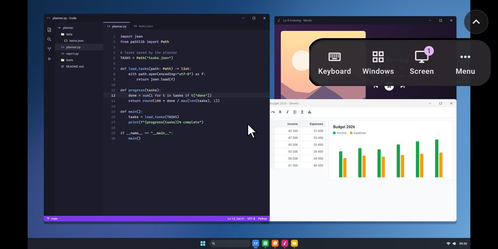
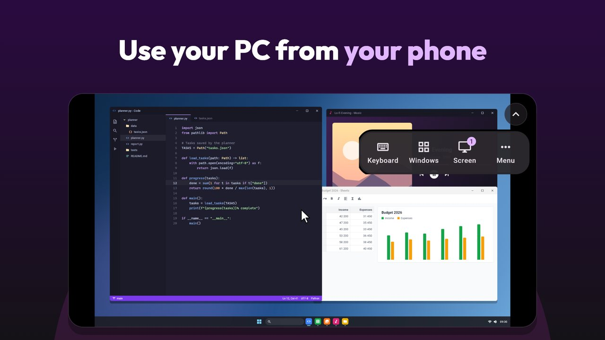
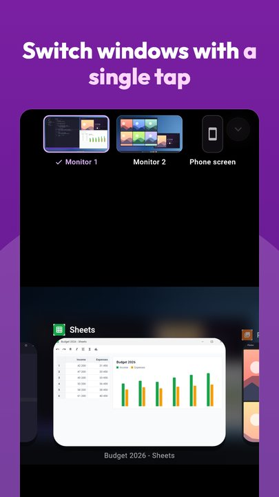
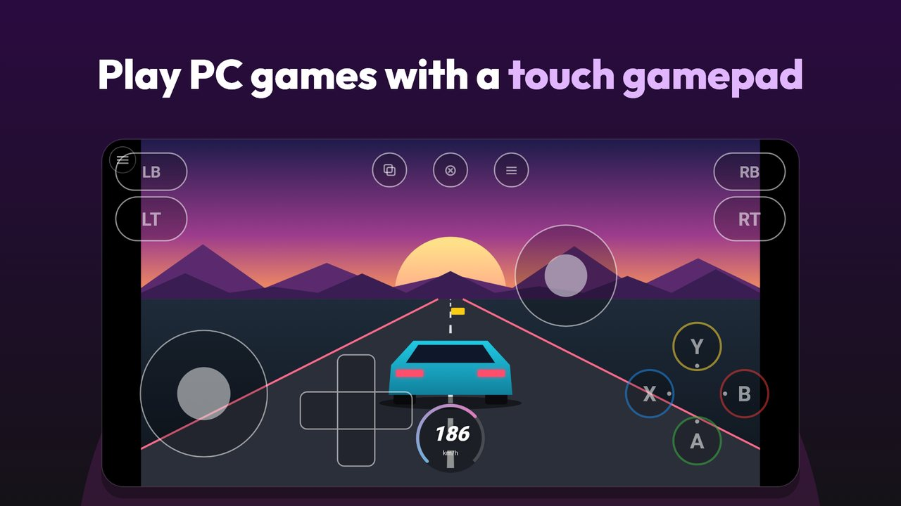
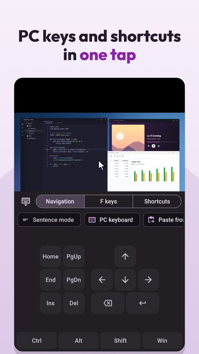
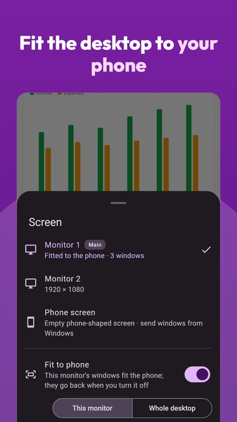
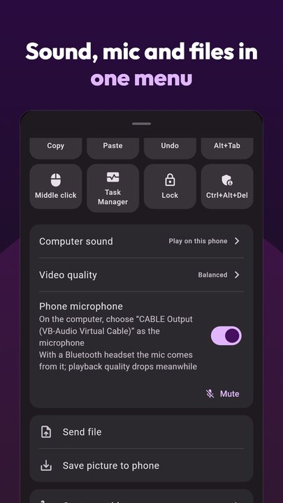
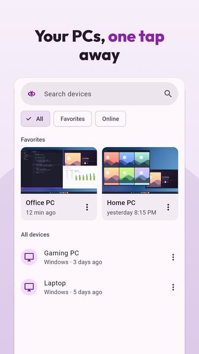

Low-latency picture
See your PC screen live on your phone, with little delay between the PC and the phone.
Vuo shows your PC screen on your Android phone with low latency. Use touch, mouse and a full PC keyboard, switch windows and monitors, and play with a gamepad - on the same Wi-Fi or over the internet.

Screens from the Vuo Android app connected to a Windows PC.







See your PC screen live on your phone, with little delay between the PC and the phone.
Tap and drag like a touchpad, use a full PC keyboard with F keys, and send shortcuts such as Alt+Tab or Ctrl+Alt+Del.
See the open windows on your PC and jump to the one you need.
Have more than one monitor? Choose which one you see on the phone.
A monitor's windows are reshaped to fit the phone screen, and go back when you turn it off.
Use your phone as the PC's microphone. Optional; needs the free VB-CABLE virtual audio device on the PC.
Play with an on-screen gamepad or a Bluetooth controller paired to your phone. The PC sees a virtual Xbox 360 controller.
Connect with a 9-digit code or a QR code, or pick your PC from the list on the same Wi-Fi. Works over the internet too.
The first time a phone tries to connect, the PC asks you. Nothing connects until you allow it.
Download Vuo-Setup and run it. Pick the optional drivers you want.
Get the Vuo app for Android from Google Play.
Enter the 9-digit code shown on the PC, scan its QR code, or choose the PC on the same Wi-Fi.
Allow the new phone on your PC once. Then you are in.
The installer is not code-signed yet, so Windows SmartScreen may stop it the first time. This is expected for new apps without a signing certificate.
Not without you. Each new phone has to be approved on the PC before it can connect. A code alone is not enough.
No. On the same Wi-Fi the phone finds the PC automatically. When you are away, connect over the internet with the 9-digit code or the QR code.
Only for the features that use them: the virtual controller for game mode and the virtual display for "Fit to phone". Everything else works without them.
Updates are built in. The PC app checks for new versions and installs them for you, so you only download the installer once.
Use Windows Settings → Apps → Installed apps → Vuo → Uninstall. The drivers stay installed unless you choose to remove them when asked, because other programs may use them.